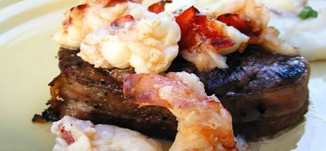

Lobster Colorado

Description
Make your Valentine’s Day dinner romantic with this restaurant style lobster tail dinner for two in under 40 minutes. Lobster Colorado doesn’t take a lot of time to prepare, giving you plenty of time to plan the rest of your Valentine’s Day.
Ingredients
- 2 (6 ounce) filet mignon (beef tenderloin)
- salt and pepper to taste
- 1/4 teaspoon garlic powder
- 2 slices bacon
- 1/4 cup butter, divided
- 1/2 teaspoon OLD BAY® Seasoning
- 8 ounces lobster tail, cleaned and chopped
Steps
- Set oven to Broil at 500 degrees F.
- Sprinkle tenderloins all over with salt, pepper, and garlic powder. Wrap each filet with bacon, and secure with a toothpick. Place on a broiling pan, and broil to desired doneness, about 8 to 10 minutes per side for medium rare.
- While tenderloins are cooking, melt 1/8 cup of butter over medium heat with 1/4 teaspoon Old Bay® seasoning. Stir in chopped lobster meat, and cook until done. Spoon lobster meat over cooked tenderloins, and return them to the broiler until the lobster meat begins to brown.
- While the lobster is in the oven, heat the remaining 1/8 cup of butter in a small saucepan over medium-high heat, cook until it browns, turning the color of a hazelnut. To serve, spoon the browned butter over the steaks, and sprinkle with the remaining Old Bay® seasoning.
- *Important* Take Roast out of the oven 8°F–10°F before desired temperature and let sit for 10–15 minutes covered in aluminum foil. The roast will continue to cook for that time and reach your desired temperature (Rare 140° F / Medium 160° F / Well 170° F). Use meat thermometer for best results.